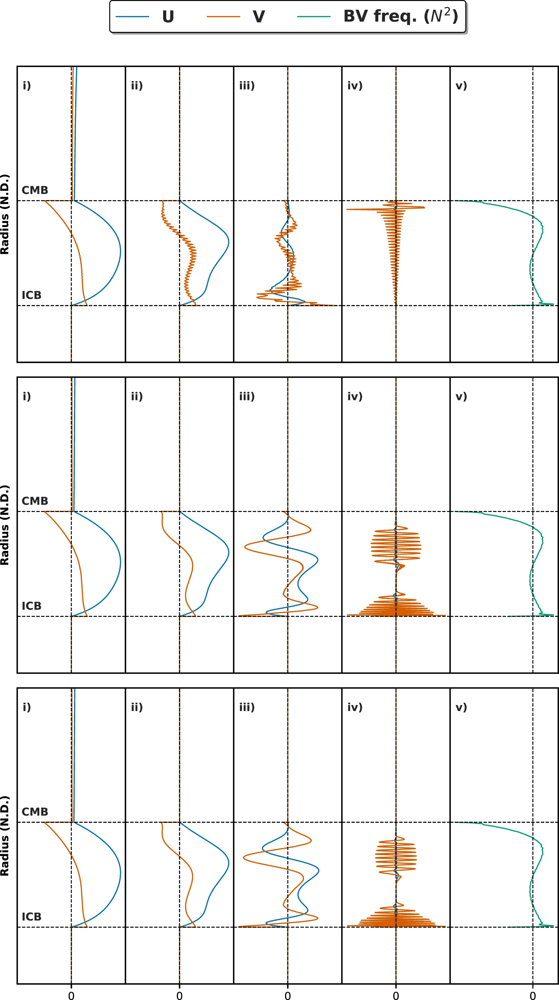

Paper workflows / ex6
EX6 · Low-frequency fluid and radial response
Uses the low-level SEM matrices for a tidal-forcing calculation, samples radial responses, computes the buoyancy-frequency profile in the fluid shell and reports the fluid share of kinetic energy.


New Figure 7 resolution diagnostic · 20 October 2026
A separately reviewed degree-2 tidal calculation compares normalized radial response shapes across three mesh resolutions and four forcing periods. It is a DSpecM1D resolution/stability study, not a YSpecpp comparison or absolute tide-amplitude estimate. View the new plots and provenance.
Configuration
Uses data/params/ex6.txt. The executable prompts for the maximum SEM step size; it evaluates forcing periods of 12, 48, 168 and 1680 hours.
Comparison inputs
These outputs are computed from the DSpecM1D model and SEM solution; this case does not load YSpec, MINEOS or SpecNM traces.
Executable and outputs
cmake -S . -B build/release -DDSPECM1D_BUILD_BENCHMARKS=ON
cmake --build build/release --target ex6 --parallel 2
OMP_NUM_THREADS=2 ./build/release/bin/ex6
OMP_NUM_THREADS=2 ./build/release/bin/ex6
OMP_NUM_THREADS=2 ./build/release/bin/ex6The executable prompts for the maximum SEM step size. Enter 0.01, 0.001 and 0.0001 in order for the three invocations. The runs write files to build/release/output/; for the first step size, these include ex6_radial_response_0.010000.out, ex6_N2_0.010000.out and ex6_w_0.010000.out.
Plot command
After all three runs finish, run this from the repository root:
DSPECM1D_BUILD_DIR=build/release python3 plotting/functions/ex6.pyScope and limits
This is published Figure 7. The paper shows mesh sizes 0.01a, 0.001a and 0.0001a and forcing periods expressed relative to the maximum Brunt–Väisälä period. The plotting script reads outputs from separate runs at all three mesh sizes. This is a fluid-response study, not an accuracy score.